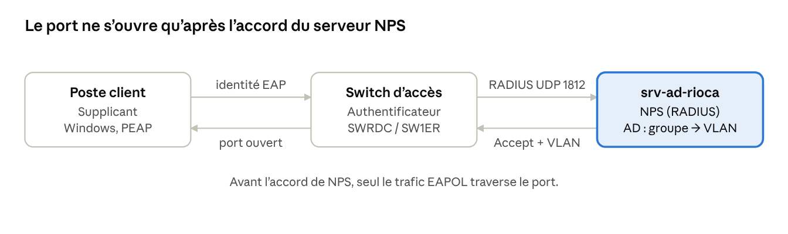
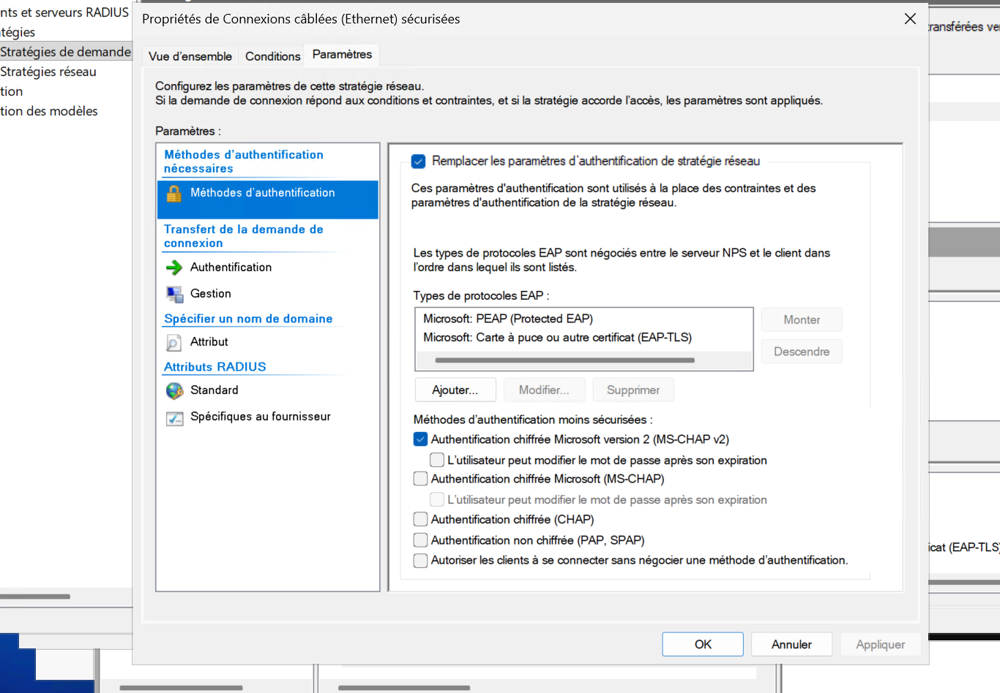
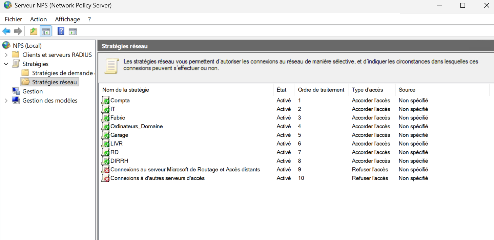
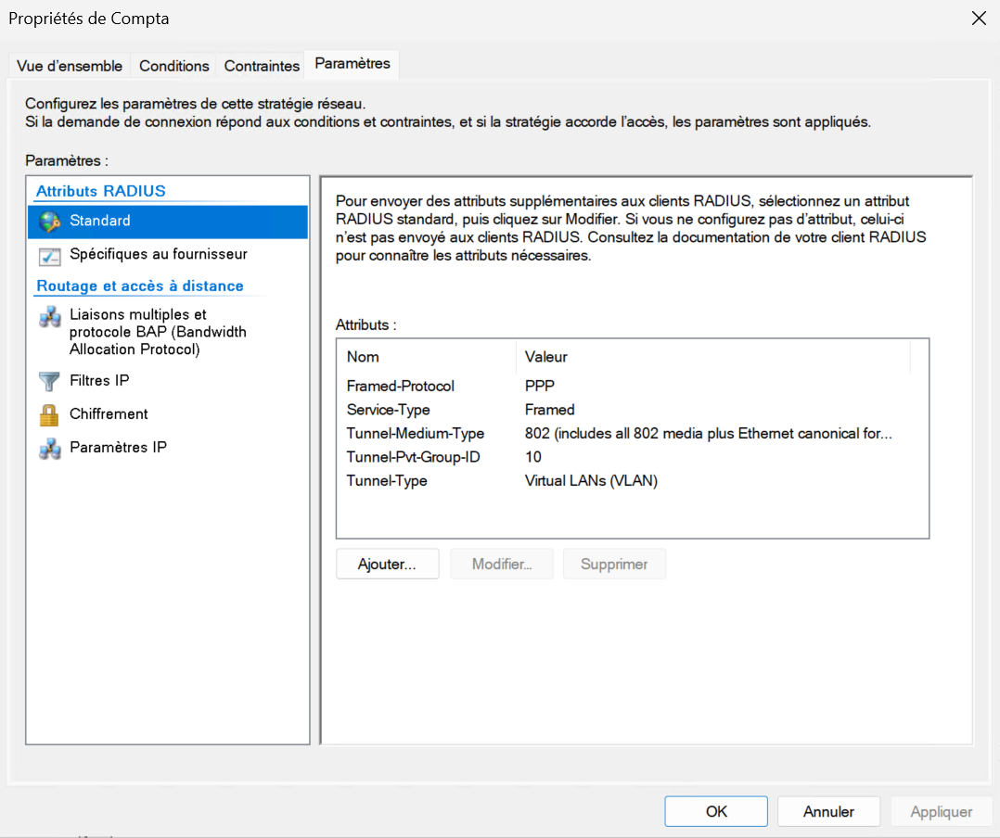
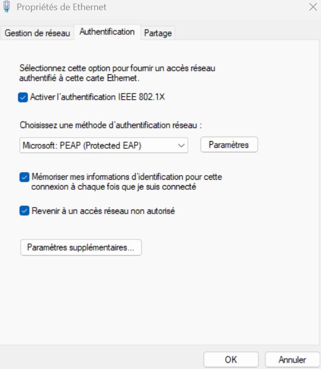
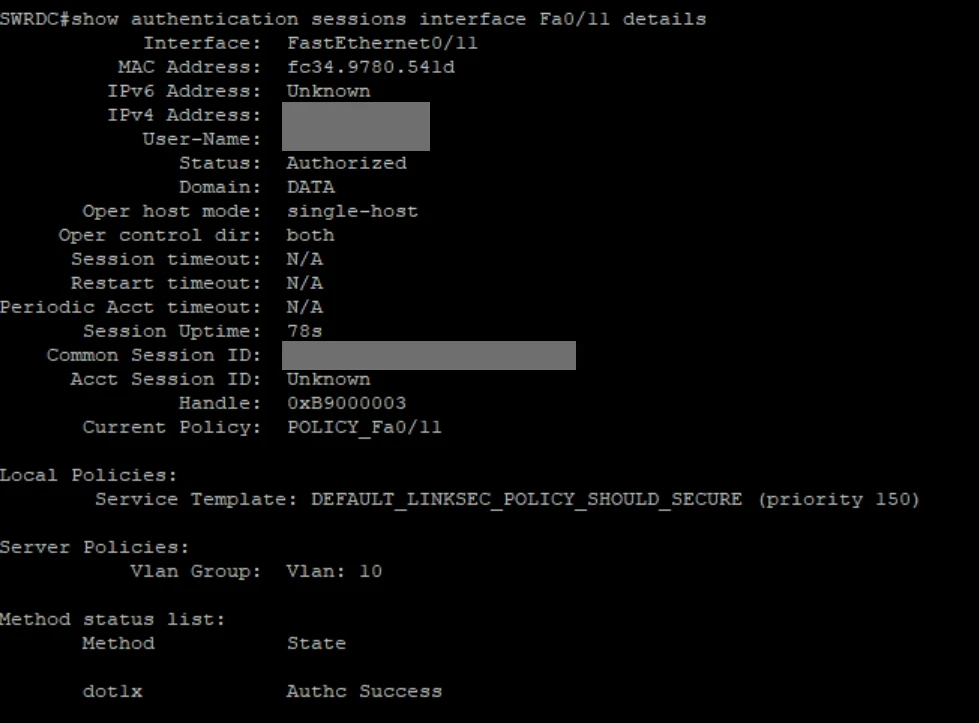
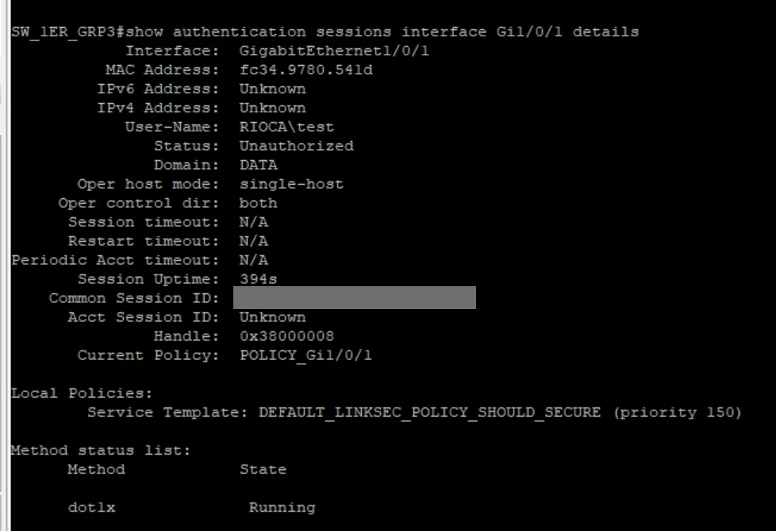
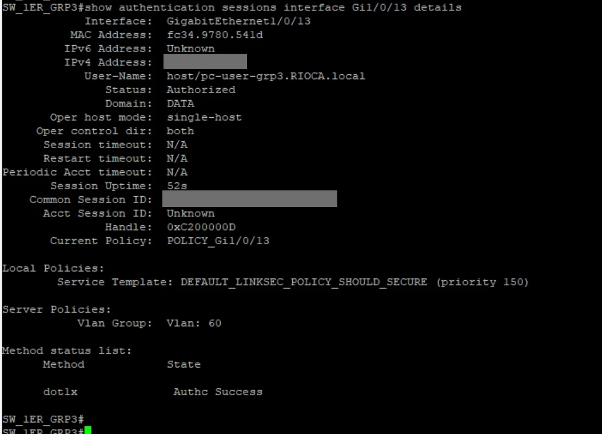
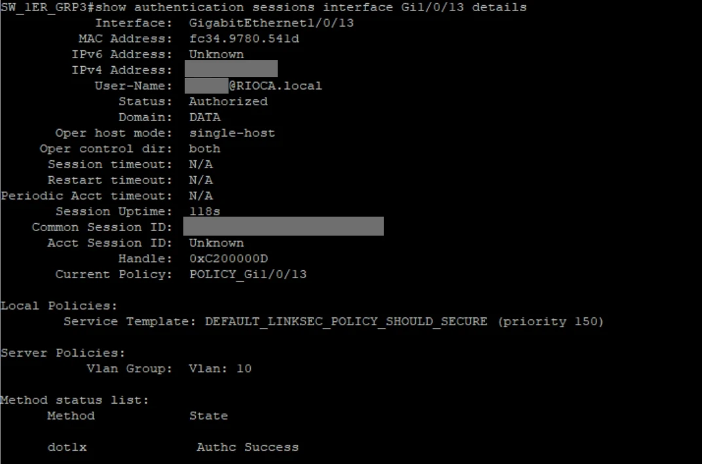

01Contexte et principe
Sur le réseau de la maquette RIOCA, le VLAN dépendait du port : un salarié qui changeait de bureau ou d'étage se retrouvait dans le réseau d'un autre service, et n'importe quel appareil branché sur une prise avait accès au réseau, sans aucun contrôle. Le 802.1X règle les deux problèmes. Trois acteurs y jouent un rôle :
| Rôle 802.1X | Équipement | Fonction |
|---|---|---|
| Supplicant | Poste client Windows | Envoie l'identité de l'utilisateur ou du PC |
| Authentificateur | Switchs du rez-de-chaussée (SWRDC) et du 1er étage (SW1ER) | Bloque le port et transmet les messages au serveur RADIUS |
| Serveur d'authentification | NPS sur le contrôleur de domaine srv-ad-rioca | Vérifie le compte dans l'AD, choisit la stratégie et renvoie le VLAN |
Comment se passe une connexion :
- Quand on branche le PC, le port est bloqué : seuls les messages d'authentification (EAPOL) passent.
- Le PC s'authentifie en PEAP : un tunnel TLS est créé avec le certificat du serveur, puis le mot de passe est vérifié en EAP-MSCHAP v2 à l'intérieur.
- Le switch transmet l'échange au serveur NPS en RADIUS (UDP 1812).
- Le NPS vérifie le compte dans l'AD et prend la première stratégie réseau qui correspond à son groupe.
- Il répond Access-Accept avec trois attributs : Tunnel-Type = VLAN, Tunnel-Medium-Type = 802 et Tunnel-Pvt-Group-ID = numéro du VLAN.
- Le switch ouvre le port dans ce VLAN, et le PC obtient son adresse en DHCP.


Nous n'avons rien acheté : tout repose sur les rôles de Windows Server et sur les switchs déjà en place.
02Groupes et VLAN
Le contrôleur de domaine porte maintenant quatre rôles : AD DS, DNS, autorité de certification (AD CS) et NPS. Les deux switchs d'étage sont ses clients RADIUS. Chaque service a un groupe dans l'AD et un VLAN :
| Service | Groupe AD | VLAN |
|---|---|---|
| Comptabilité – Paie | COMPTA | 10 |
| Atelier de fabrication | FABRIC | 20 |
| Garage | GARAGE | 30 |
| Livraison | LIVR | 40 |
| Recherche et développement | RD | 50 |
| Infrastructure et système | IT | 60 |
| Direction et ressources humaines | DIRRH | 80 |
Les VLAN d'administration (70) et des serveurs (100) ne sont jamais donnés par le NPS. Le VLAN déjà réglé sur chaque port devient un simple VLAN par défaut : le vrai VLAN vient du NPS. Tous les VLAN des utilisateurs doivent donc exister sur les deux switchs, sinon la mobilité ne marche pas.
03Serveur NPS
Autorité de certification. PEAP a besoin d'un certificat pour authentifier le serveur. Nous avons installé AD CS en autorité de certification d'entreprise racine, puis demandé un certificat ordinateur pour srv-ad-rioca. Les PC du domaine font confiance à cette autorité sans rien faire, car elle est publiée dans l'AD.
NPS. Après l'installation du rôle « Services de stratégie et d'accès réseau », le NPS est inscrit dans l'AD pour pouvoir lire les comptes, et les ports RADIUS sont ouverts dans le pare-feu Windows :
New-NetFirewallRule -DisplayName "RADIUS Authentification" -Direction Inbound -Protocol UDP -LocalPort 1812 -Action Allow
New-NetFirewallRule -DisplayName "RADIUS Comptabilisation" -Direction Inbound -Protocol UDP -LocalPort 1813 -Action AllowLes deux switchs sont déclarés comme clients RADIUS, avec leur adresse dans le VLAN d'administration et un secret partagé : une requête venue d'une autre adresse est ignorée.
Stratégie de demande de connexion. Elle s'applique aux connexions Ethernet et règle les méthodes d'authentification une seule fois pour toutes les stratégies : PEAP en premier, puis EAP-TLS par certificat en secours (voir la partie 6).


Stratégies réseau. Le NPS lit les stratégies dans l'ordre et prend la première qui correspond. Il faut donc placer celles des services avant les deux stratégies par défaut, qui refusent tout. Chaque stratégie de service a pour condition le groupe AD du service, et renvoie son VLAN avec trois attributs RADIUS standard. Une stratégie de plus, Ordinateurs_Domaine, authentifie le PC lui-même avant l'ouverture de session : elle sert à EAP-TLS.
| Attribut | Valeur |
|---|---|
| Tunnel-Medium-Type | 802 (tous les médias 802, dont Ethernet) |
| Tunnel-Type | Virtual LANs (VLAN) |
| Tunnel-Pvt-Group-ID | Numéro du VLAN du service (10, 20, 30…) |




04Switchs
Les deux switchs ont la même configuration globale. Les liens vers le switch cœur n'ont pas de 802.1X.
aaa new-model
aaa authentication login default local
aaa authorization exec default local
aaa authentication dot1x default group radius
aaa authorization network default group radius
aaa session-id common
dot1x system-auth-control
!
radius server serveur-nps
address ipv4 <adresse du NPS> auth-port 1812 acct-port 1813
key <secret partagé>Puis, sur les ports des postes (ici ceux du 1er étage) :
interface range GigabitEthernet1/0/1 - 19
switchport mode access
authentication port-control auto
dot1x pae authenticator
dot1x timeout tx-period 10
spanning-tree portfast| Commande | Rôle |
|---|---|
| aaa authentication login default local | La console et le SSH utilisent le compte local : l'administration des switchs ne dépend pas de RADIUS |
| aaa authorization exec default local | Garde le privilège 15 du compte local : on arrive directement en mode privilégié |
| aaa authentication dot1x default group radius | Envoie les authentifications 802.1X au serveur RADIUS |
| aaa authorization network default group radius | Permet au switch d'appliquer ce que renvoie le NPS, dont le VLAN |
| authentication port-control auto | Le port reste fermé tant que l'authentification n'a pas réussi |
| dot1x pae authenticator | Le port joue le rôle d'authentificateur : obligatoire en IOS 15 |
| dot1x timeout tx-period 10 | Redemande l'identité du PC toutes les 10 secondes au lieu de 30 |
05Postes clients
Chaque PC doit jouer le rôle de supplicant, sinon il reste bloqué sur le port. Le service Windows « Configuration automatique de réseau câblé » (dot3svc), désactivé de base, est passé en démarrage automatique :
Set-Service dot3svc -StartupType Automatic
Start-Service dot3svcDans l'onglet Authentification de la carte Ethernet :
| Paramètre | Valeur |
|---|---|
| Authentification IEEE 802.1X | Activée |
| Méthode | Microsoft: PEAP, méthode interne EAP-MSCHAP v2 |
| « Utiliser automatiquement mon nom et mot de passe Windows » | Décoché (voir la partie 6) |
| Mode d'authentification | Authentification utilisateur |
| Mémoriser mes informations d'identification | Coché : à la première connexion sur un PC, l'utilisateur tape son identifiant et son mot de passe, gardés pour sa seule session |
| Vérifier l'identité du serveur | Décoché pendant les tests ; à recocher avec l'autorité de l'entreprise (voir la partie 9) |


Un PC hors du domaine ne connaît ni l'autorité de certification ni les comptes AD. Il faut en plus désactiver « Activer la confidentialité de l'identité » (sinon le PC envoie « anonymous » et le NPS cherche ce nom dans l'AD), et utiliser un compte nominatif d'un service, jamais l'administrateur du domaine.
06Une mise à jour Windows, et le secours par certificats
Au départ, les postes devaient envoyer automatiquement les identifiants de la session Windows. Ça échouait, pour les utilisateurs comme pour le compte ordinateur, et le NPS ne journalisait que des échanges inachevés, sans accord ni refus. Nous avons d'abord soupçonné Credential Guard, qui bloque MS-CHAP v2 avec les identifiants Windows : le désactiver n'a rien changé.
La piste est venue du poste lui-même. Le journal Wired-AutoConfig affichait l'événement 15514 (raison 0x50005, erreur 0x80070285, blocage de 600 secondes). La cause : la mise à jour Windows KB5127648 d'octobre 2026 bloque l'envoi automatique des identifiants Windows en PEAP-MSCHAP v2. Nous avons décoché cette option : chaque utilisateur tape ses identifiants une fois par PC.
En parallèle, nous avons mis en place une solution de secours sans mot de passe, EAP-TLS, où le poste et l'utilisateur prouvent leur identité par un certificat :
- deux modèles de certificat copiés dans AD CS, un pour les ordinateurs et un pour les utilisateurs, avec l'inscription automatique ;
- une GPO liée au domaine qui active l'inscription automatique côté ordinateur et côté utilisateur ;
- EAP-TLS ajouté à la stratégie de demande de connexion, et la stratégie Ordinateurs_Domaine (VLAN 60) pour le PC avant l'ouverture de session ;
- sur le PC, la méthode « Carte à puce ou autre certificat », en mode utilisateur ou ordinateur.
Avantage : aucun mot de passe ne circule, et le PC a le réseau dès l'écran de connexion. Limite : un nouvel utilisateur doit d'abord récupérer son certificat depuis un PC déjà connecté au réseau.
07Tests
Pour chaque test, on regarde trois choses : le port sur le switch (show authentication sessions interface … details), la décision du NPS dans l'observateur d'événements (6272 pour un accès accordé, 6273 pour un refus) et l'adresse reçue par le PC (ipconfig /all).
| N° | Test | Résultat obtenu |
|---|---|---|
| T1 | Le serveur NPS répond au ping des deux switchs | 5 réponses sur 5 sur chaque switch |
| T2 | Dialogue RADIUS entre switch et NPS (show aaa servers) | Serveur UP, aucun délai dépassé |
| T3 | Un utilisateur de la Compta sur un port du rez-de-chaussée en VLAN 30 par défaut, puis sur un port du 1er étage | Authorized et VLAN 10 sur les deux switchs, adresse dans le réseau du VLAN 10 |
| T4 | Un utilisateur de l'IT sur un port en VLAN 10 par défaut | Authorized, VLAN 60, adresse dans le réseau du VLAN 60 |
| T5 | Stratégies du NPS (netsh nps show np) | 8 stratégies d'accès activées, en ordre 1 à 8, chacune avec son VLAN |
| T6 | Un compte membre d'aucun groupe de service | Unauthorized, aucune adresse, événement 6273 |
| T7 | SSH sur un switch avec le compte local d'administration | Connexion acceptée, arrivée directe en mode privilégié |
| T8 | Deux utilisateurs de services différents, l'un après l'autre sur le même PC | Chacun reçoit le VLAN de son service |
| T9 | Secours EAP-TLS : le PC à l'écran de connexion, puis la session d'un utilisateur de la Compta | PC en VLAN 60, puis utilisateur en VLAN 10 |
Les stratégies ne diffèrent que par le groupe et le VLAN : le test T5 les vérifie toutes au lieu d'un test par service.








08Anomalies corrigées
Nous avons rencontré 14 problèmes pendant la mise en place et les tests, tous notés dans le rapport avec le symptôme, le diagnostic, la cause et la correction. La plupart venaient des stratégies du NPS et ont été trouvés grâce à l'observateur d'événements. Les plus instructifs :
| Symptôme | Cause | Correction |
|---|---|---|
| Port bloqué, aucune trace sur le NPS : le switch n'envoyait aucune requête | dot1x pae authenticator manquant : en IOS 15, port-control auto seul ne lance pas l'échange | Commande ajoutée sur les ports des postes |
| Refus immédiat, événement 6273 avec le code 65 | Les stratégies par défaut passaient avant celles des services, et l'une d'elles prend toutes les demandes | Stratégies des services remontées en tête de liste |
| Une utilisatrice du service Fabric refusée, PC sans adresse | « Type de serveur d'accès réseau » réglé sur « Spécifique au fournisseur », et copies de stratégie désactivées | Remis sur « Non spécifié », copies activées |
| SSH accepté sur un switch, mais mode privilégié refusé | Avec aaa new-model, le privilège du compte local ne s'applique plus sans autorisation exec | aaa authorization exec default local |
| Postes du VLAN IT bloqués sur « Vérification de vos informations d'identification » | Tapée sur une plage qui incluait des ports éteints, la commande dot1x pae authenticator avait échoué et fait sortir du mode interface : une partie des ports ne l'avait pas reçue | Commandes refaites sur la seule plage des ports des postes |
| PC hors domaine refusé, compte « anonymous » dans le journal | Option PEAP « Activer la confidentialité de l'identité » | Option décochée |
| Tous les utilisateurs d'un poste placés dans le VLAN IT | Les identifiants d'un membre de l'IT avaient été enregistrés pour tout le PC | Identifiants supprimés, chacun se connecte avec son compte |
| Aucune authentification avant l'ouverture de session | dot3svc en démarrage manuel : il ne démarre qu'à l'ouverture de session | Service en démarrage automatique |
| Échec avec les identifiants Windows, pour tous les comptes | Mise à jour KB5127648 (voir la partie 6) | Identifiants tapés une fois par utilisateur, EAP-TLS en secours |
À retenir : le code 65 renvoie vers l'onglet « Appel entrant » du compte, mais la vraie cause se lisait dans le champ « Nom de stratégie réseau » de l'événement. Quand c'est une stratégie par défaut, c'est qu'aucune stratégie de service n'a correspondu.
09Bilan et améliorations
La solution marche sur les deux switchs : chaque utilisateur se connecte avec son compte AD et reçoit le VLAN de son service, quel que soit le port ou l'étage. Un PC ou un compte non autorisé n'a plus aucun accès, l'administration des switchs ne dépend pas de RADIUS, et le secours par certificats fonctionne.
Le point faible principal : un seul serveur NPS. S'il tombe, plus personne ne peut se connecter. Les améliorations proposées :
- un second serveur NPS, déclaré comme deuxième serveur RADIUS sur les switchs ;
- la clé de registre BlockNtlmv1SSO = 0, déployée par GPO, pour rétablir l'envoi automatique des identifiants Windows bloqué par KB5127648 ;
- la configuration 802.1X des postes déployée par GPO, au lieu de régler chaque PC à la main ;
- « Vérifier l'identité du serveur » recoché avec l'autorité de l'entreprise, pour qu'un faux serveur RADIUS ne puisse pas récupérer les mots de passe ;
- un VLAN « parking », sans routage ni DHCP, comme VLAN par défaut des ports ;
- la comptabilisation RADIUS, pour garder une trace des connexions, et l'authentification par adresse MAC (MAB) pour les imprimantes ;
- Credential Guard réactivé sur les postes, compatible avec les identifiants mémorisés et EAP-TLS.
Ce que j'en retiens : quand l'authentification échoue, chaque acteur a son journal. Le switch dit si une requête est partie, le NPS dit quelle stratégie a répondu, et le poste dit pourquoi il n'a rien envoyé. C'est en lisant les trois que nous avons trouvé la mise à jour Windows en cause.
Ce TP a eu une suite : quand nous avons testé BPDU Guard pour le Spanning Tree, un switch branché sur une prise 802.1X n'a déclenché aucune protection, car le port non authentifié ne laissait déjà rien passer.